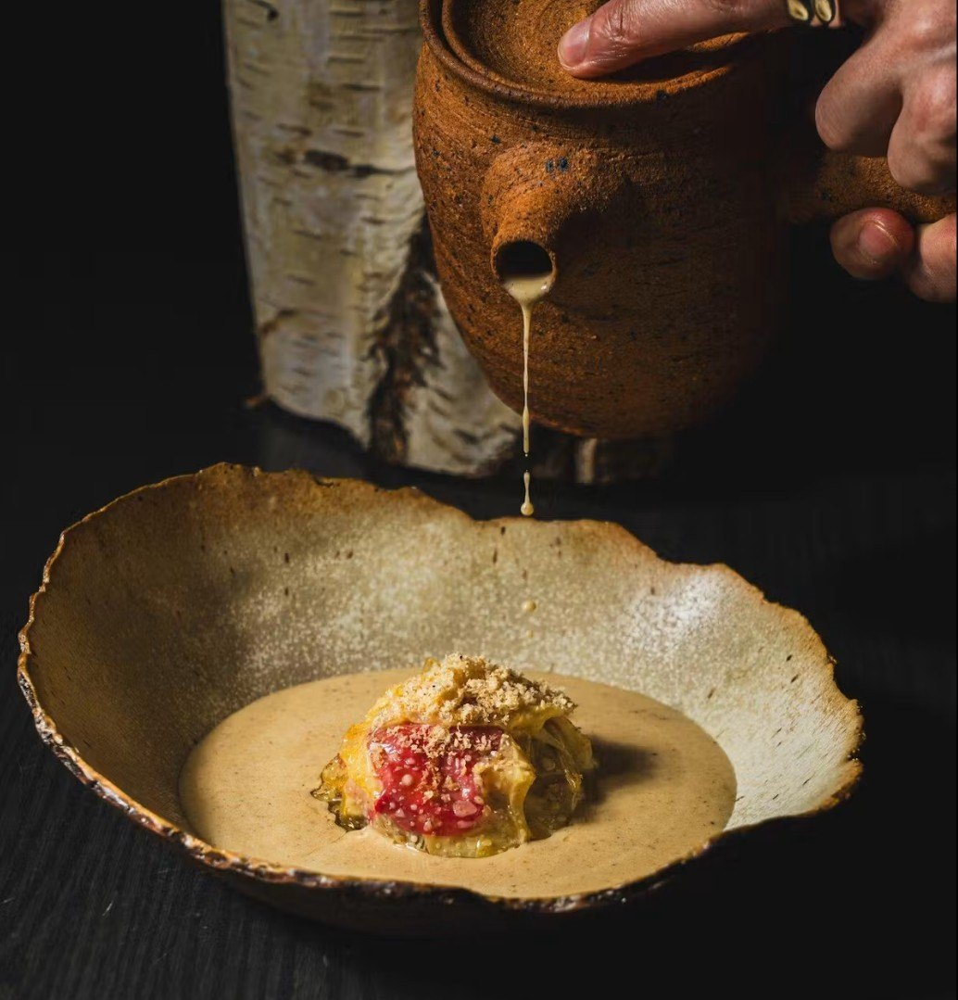
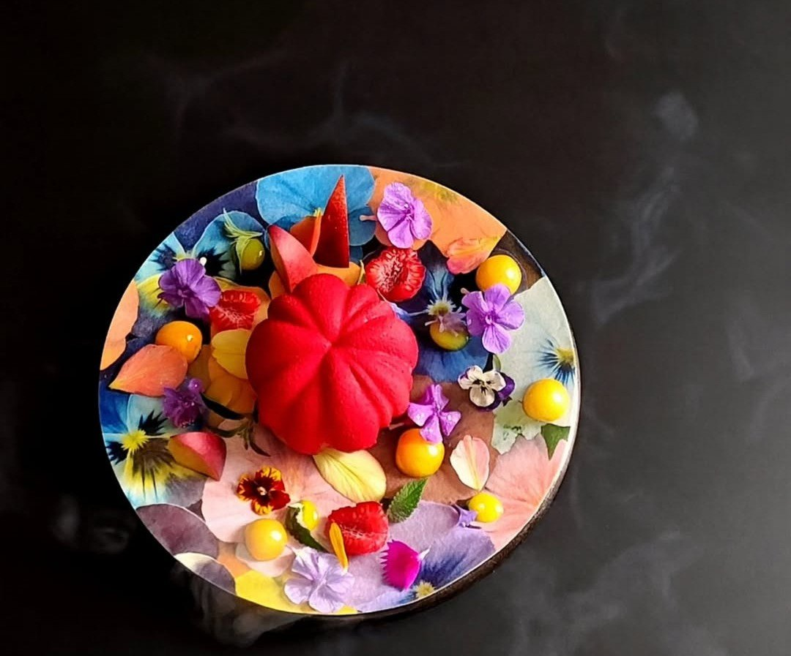
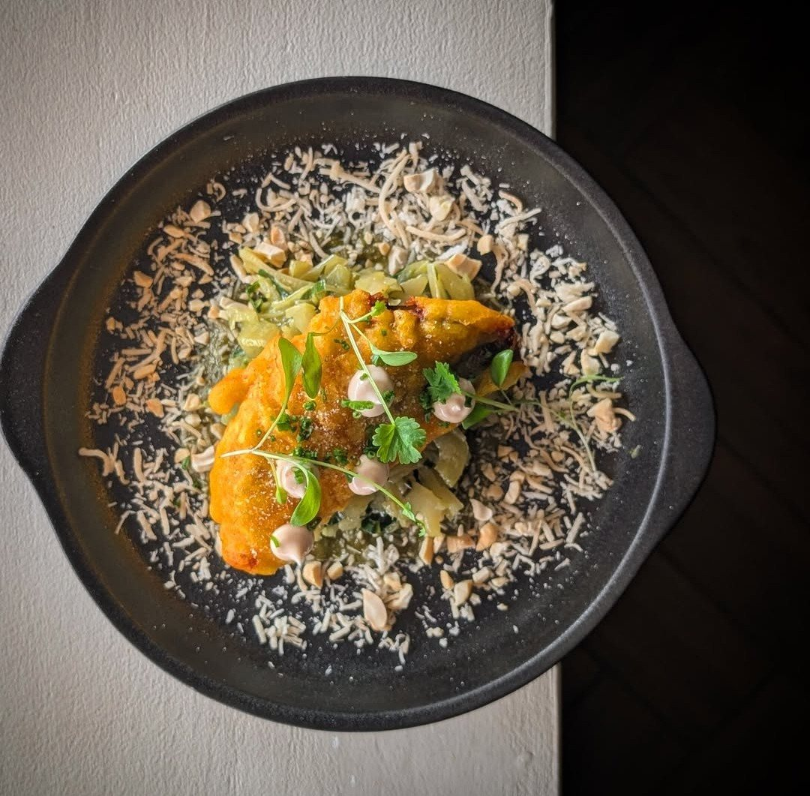
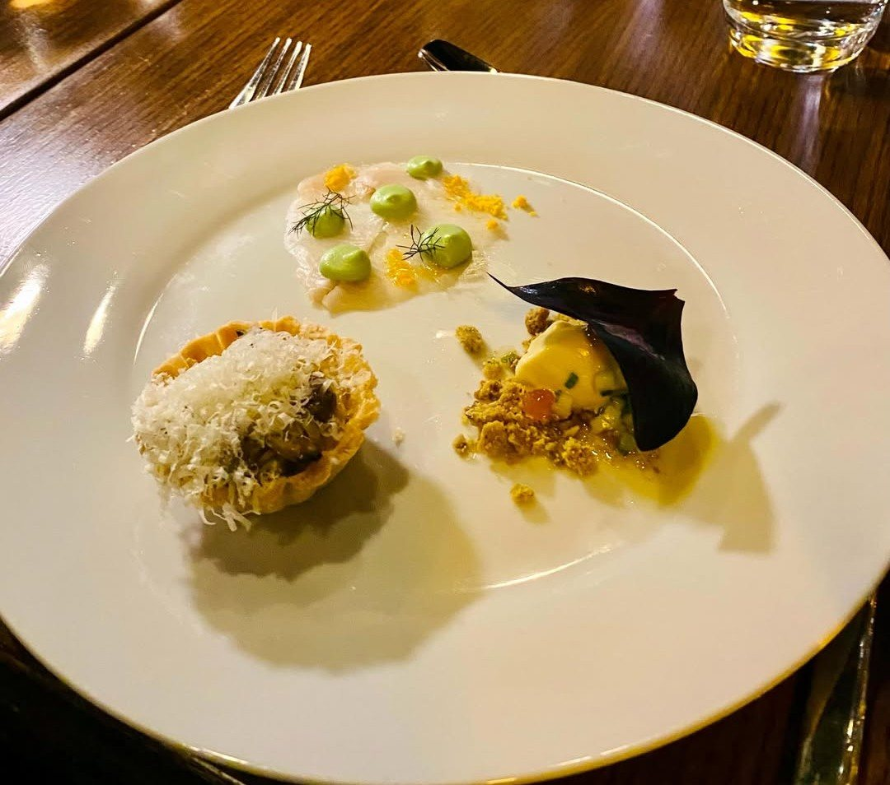
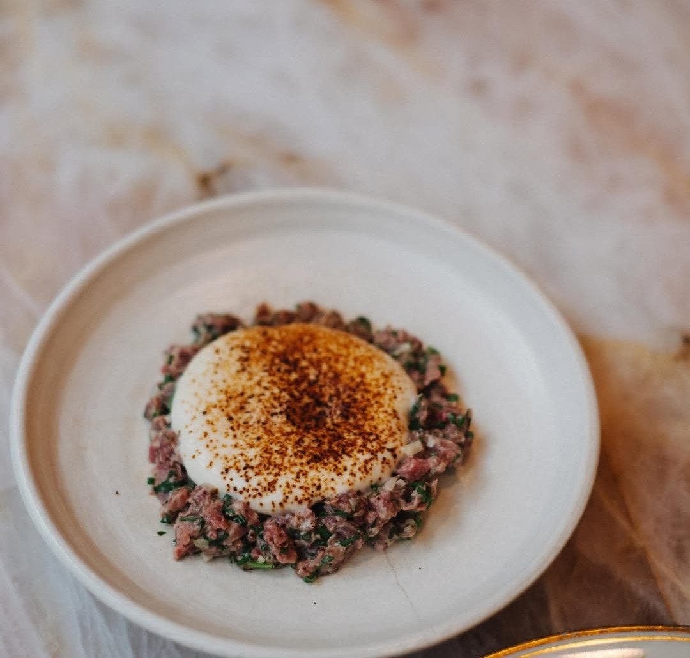
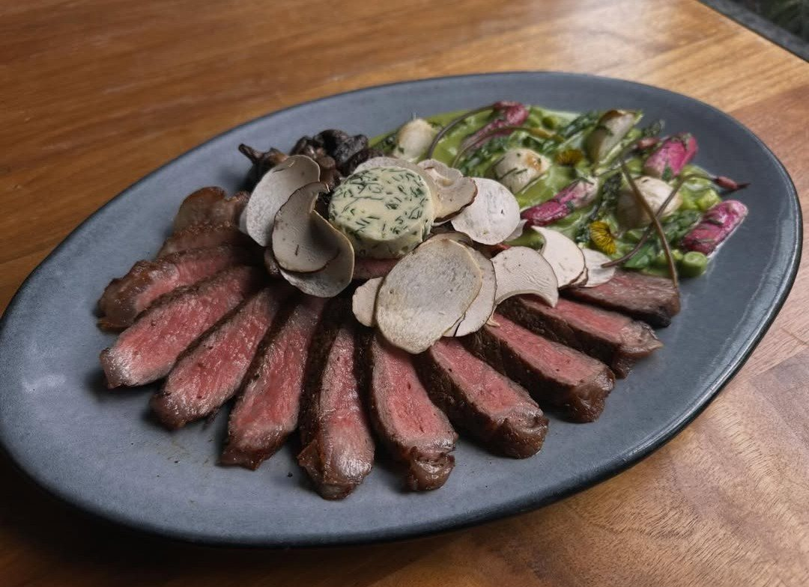
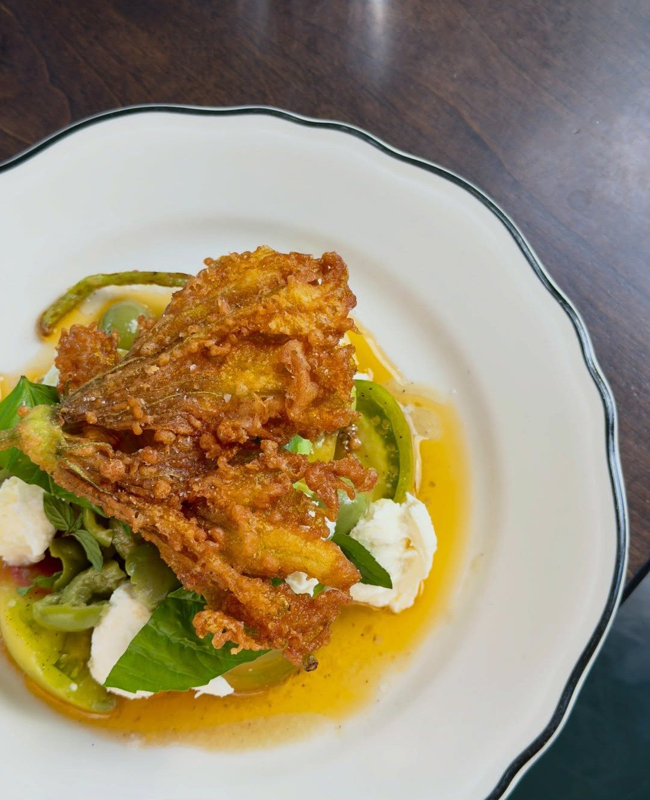
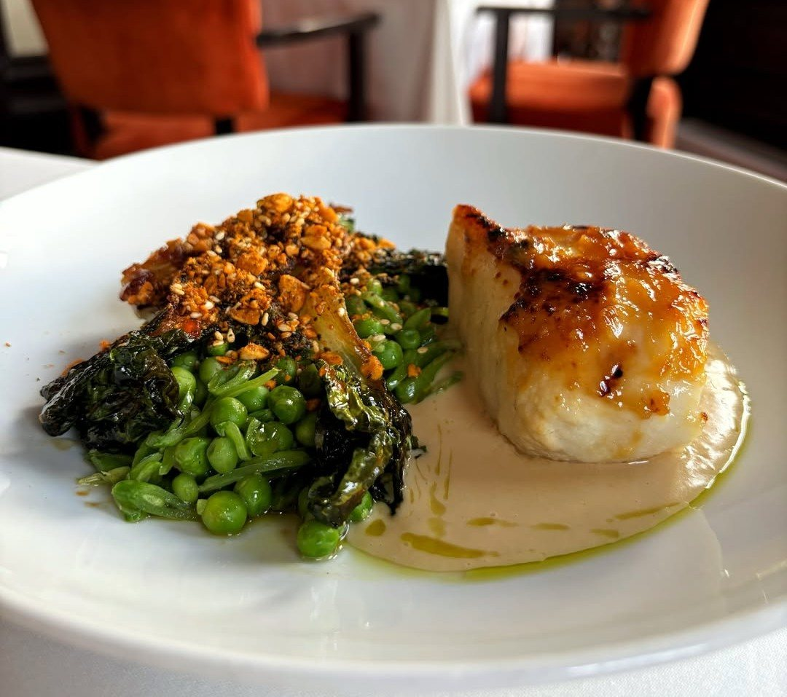
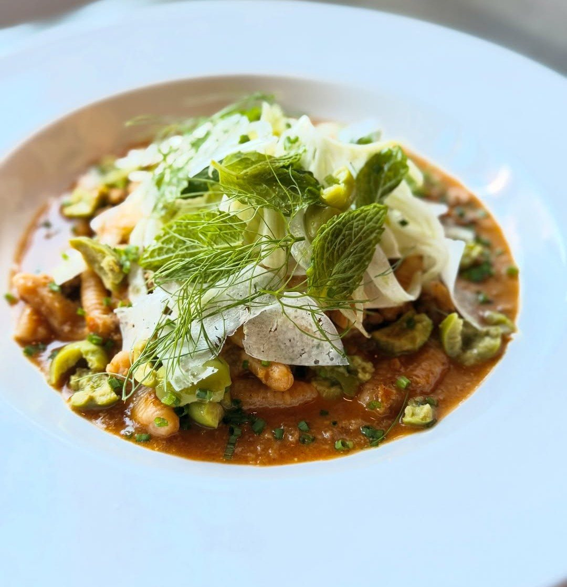
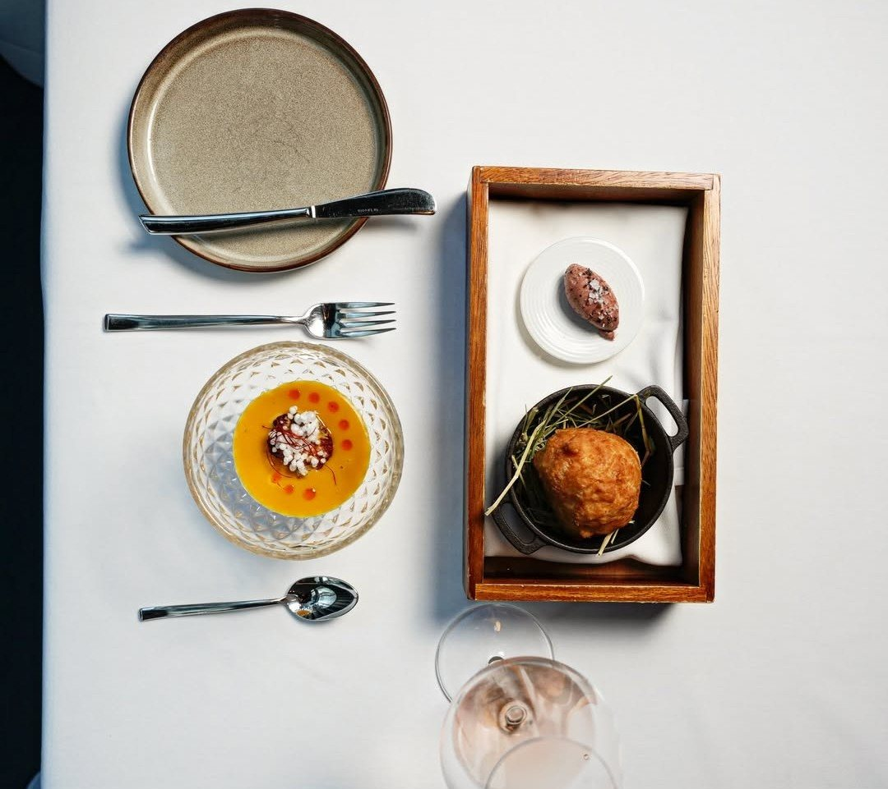

The best restaurants in Ottawa in 2026 are Antheia, Atelier, Stofa, Raphaël, Gitanes, Fauna, Supply & Demand, Beckta, Town and Aiana. Two of them serve only tasting menus, three more offer one alongside à la carte, and together they range from a seven-course modernist tasting menu to a bowl of pasta on Wellington West.
Ottawa's top 10 at a glance
| No. | Restaurant | Neighbourhood | Cooking | Menu |
|---|---|---|---|---|
| 01 | Antheia | Somerset West | Plant-based, fermentation | Tasting menu only |
| 02 | Atelier | Little Italy | Modernist | Tasting menu only |
| 03 | Stofa | Wellington West | Contemporary Canadian | Prix fixe or à la carte |
| 04 | Raphaël | Elgin Street | Peruvian | À la carte, small plates |
| 05 | Gitanes | Golden Triangle | French | Tasting menu or à la carte |
| 06 | Fauna | Bank Street | Seasonal | Small plates |
| 07 | Supply & Demand | Wellington West | Raw bar, pasta | À la carte |
| 08 | Beckta | Elgin Street | Fine dining | Tasting menu or à la carte |
| 09 | Town | Elgin Street | Italian-inspired | À la carte |
| 10 | Aiana | Downtown | Canadian | Tasting menu or à la carte |
The 10 best restaurants in Ottawa
-

01Antheia
Somerset WestChef Briana Kim's plant-based tasting menu is built around fermentation, with the kitchen and its fermentation work right in the dining room and a counter that puts you close to the cooking. It's one of the most original meals in the country, and nobody leaves missing the meat.
- Menu
- Plant-based tasting menu only
- Best for
- Adventurous eaters, vegetarians, the counter seat
- Book
- Tock
-

02Atelier
Little ItalyOttawa's most inventive kitchen serves a seven-course modernist tasting menu. Techniques you won't find anywhere else in the city meet a sense of humour about what a course can be, and the result is an evening that people travel for.
- Menu
- Tasting menu only
- Best for
- A special occasion, curious eaters
- Book
- atelierrestaurant.ca
-

03Stofa
Wellington WestContemporary Canadian cooking in a calm, Nordic-inspired room. Stofa is refined without being stiff: precise plates, a serious wine list, and one of the best rooms in the city for a long conversation.
- Menu
- Prix fixe or à la carte
- Best for
- Date night, a quieter fine dining evening
- Book
- stofarestaurant.com
-

04Raphaël
Elgin StreetChef Lizardo Becerra brings Peruvian cooking to Elgin Street, from ceviche to bright, layered sauces, refined into plates made for sharing. It's the most exciting non-tasting-menu meal on this list.
- Menu
- À la carte, small plates
- Best for
- Sharing, groups, something different
- Book
- raphaelperuviancuisine.ca
-

05Gitanes
Golden TriangleFrench cooking with Canadian ingredients, a raw bar and a serious wine cellar, tucked onto a quiet street just off Elgin. Come for the tasting menu, or sit down for tartare and a bottle.
- Menu
- Tasting menu or à la carte
- Best for
- Wine lovers, a classic night out
- Book
- gitanes.co
-

06Fauna
Bank StreetSeasonal small plates on Bank Street, and a bison tartare that regulars keep coming back for. Fauna has the energy of a neighbourhood favourite and the cooking of a destination.
- Menu
- Small plates
- Best for
- A lively dinner, sharing with friends
- Book
- faunaottawa.ca
-

07Supply & Demand
Wellington WestWellington West's raw bar and pasta destination, from crudo to squid ink rigatoni. It's relaxed and busy, and it's the kind of place you end up going back to every month.
- Menu
- À la carte
- Best for
- Pasta, crudo, a weeknight treat
- Book
- supplyanddemandfoods.ca
-

08Beckta
Elgin StreetStephen Beckta's flagship has set the standard for polished dining in Ottawa since 2003. Service here is the benchmark the rest of the city is measured against, and the tasting menu is a safe bet for anyone's first big dinner out.
- Menu
- Tasting menu or à la carte
- Best for
- Anniversaries, business dinners, impeccable service
- Book
- beckta.com
-

09Town
Elgin StreetItalian-inspired comfort on Elgin since 2010, cooked with real generosity. Town is proof that a top-10 restaurant doesn't need a dress code: just very good food and people who are glad you came.
- Menu
- À la carte
- Best for
- A relaxed dinner, pasta, regulars' nights
- Book
- townlovesyou.ca
-

10Aiana
DowntownChef Raghav Chaudhary's tasting menus are built on Canadian seafood, game and produce, served in one of downtown's most polished dining rooms. It's a natural choice when you want a full fine dining experience close to Parliament Hill.
- Menu
- Tasting menu or à la carte
- Best for
- Visitors downtown, Canadian ingredients
- Book
- aiana.ca
Fine dining in Ottawa
Fine dining in Ottawa has changed. There are fewer white tablecloths and more open kitchens and counters, but the cooking at the top end has never been stronger.
- For the full experience of a long menu, a wine pairing and polished service, book Antheia, Atelier, Aiana or Beckta.
- For refined cooking in a more relaxed room, go to Stofa or Gitanes.
- For a great night that doesn't take three hours, Raphaël, Fauna, Supply & Demand and Town are all on the list on merit.
Smart casual fits in at every restaurant on this list. None of them require a jacket.
Tasting menus in Ottawa
Five of Ottawa's top 10 restaurants serve a tasting menu:
- Antheia: tasting menu only, plant-based and built on fermentation.
- Atelier: tasting menu only, seven modernist courses.
- Aiana: a tasting menu built on Canadian ingredients, with à la carte also available.
- Beckta: a tasting menu alongside its à la carte menu.
- Gitanes: a French tasting menu alongside à la carte and the raw bar.
A few things to know before you go:
- Set aside the evening. A tasting menu takes two and a half to four hours.
- Book ahead. Weekend tables can go weeks in advance, and many restaurants take a deposit or charge for late cancellations.
- Mention allergies when you book, not at the table. Kitchens prepare these menus days ahead.
- The wine pairing is optional. Sharing one between two people, or choosing a non-alcoholic pairing, is completely normal.
- Budget for the full bill: the menu, drinks, 13% HST and the tip.
Are there Michelin-star restaurants in Ottawa?
No. The Michelin Guide doesn't cover Ottawa. In Canada, Michelin publishes guides only for Toronto and the surrounding region, Vancouver, and Québec.
The 2026 Toronto edition, released in September, gave stars only to restaurants in Toronto, in Lincoln in the Niagara region and in Creemore. No restaurant in Gatineau or the Outaouais made the 2026 Québec selection either. The nearest Michelin-starred restaurants to Ottawa are in Montréal, about two hours east.
That reflects where Michelin sends its inspectors, not the quality of Ottawa's cooking. If the guide came to Ottawa, the restaurants at the top of this list are where inspectors would start.
Questions
What is the best restaurant in Ottawa?
Antheia, in Somerset West, is No. 1 on the 2026 list for its plant-based tasting menu built on fermentation. Atelier, with its seven-course modernist menu in Little Italy, is No. 2.
Where should I go for a special occasion in Ottawa?
Antheia, Atelier, Beckta and Aiana all offer a full tasting-menu evening. For something more relaxed but still special, try Stofa or Gitanes.
Which Ottawa restaurants have tasting menus?
Antheia and Atelier serve only tasting menus. Aiana, Beckta and Gitanes offer one alongside à la carte.
Does Ottawa have any Michelin-starred restaurants?
No. Michelin's Canadian guides cover Toronto and region, Vancouver and Québec, but not Ottawa. The closest starred restaurants are in Montréal.
Do I need a reservation?
Yes, for every restaurant on this list, and well in advance for weekends at the tasting-menu restaurants.
Watch the countdown
See all 10 revealed, from No. 10 to No. 1.
Ottawa's Top 10 →